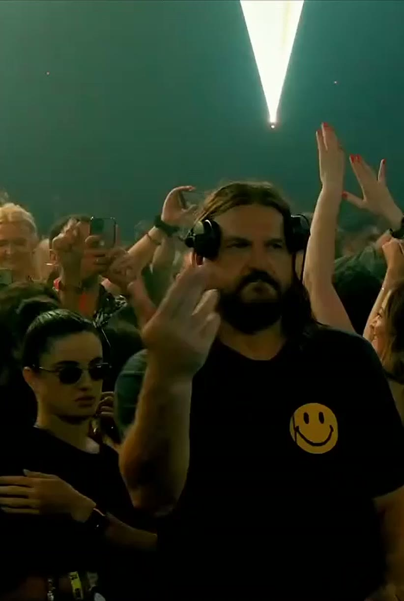
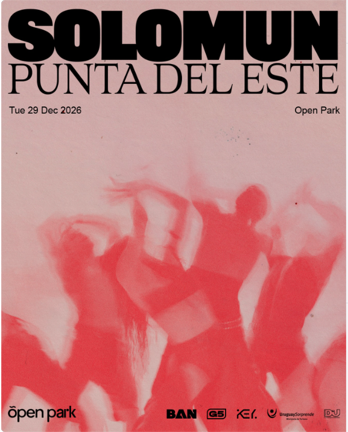

Solomun
DJ · ProducerDiynamicHamburgo
Bio
Solomun
Nació el 27 de diciembre de 1975 en Travnik, Bosnia, y creció en Hamburgo. A los 16 ya pasaba discos en un centro juvenil; trabajó unos cinco años en cine antes de dedicarse a la música.
A fines de 2005 fundó Diynamic con Adriano Trolio: “Do It Yourself”. Hoy es uno de los nombres más grandes de la música electrónica.
2012DJ del Año · Mixmag
2005Nace Diynamic
2,3 MSeguidores en IG
+1Residencia en Pacha